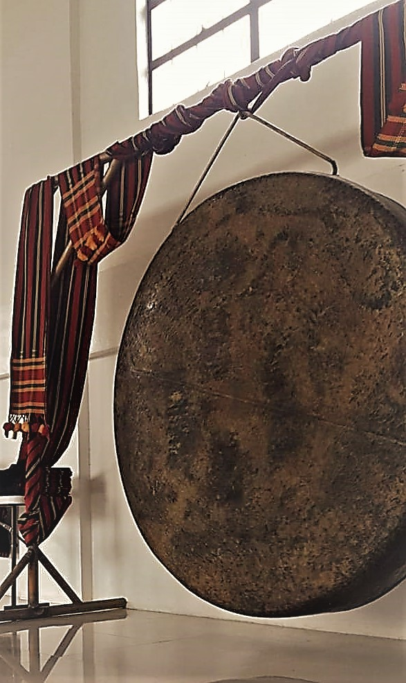
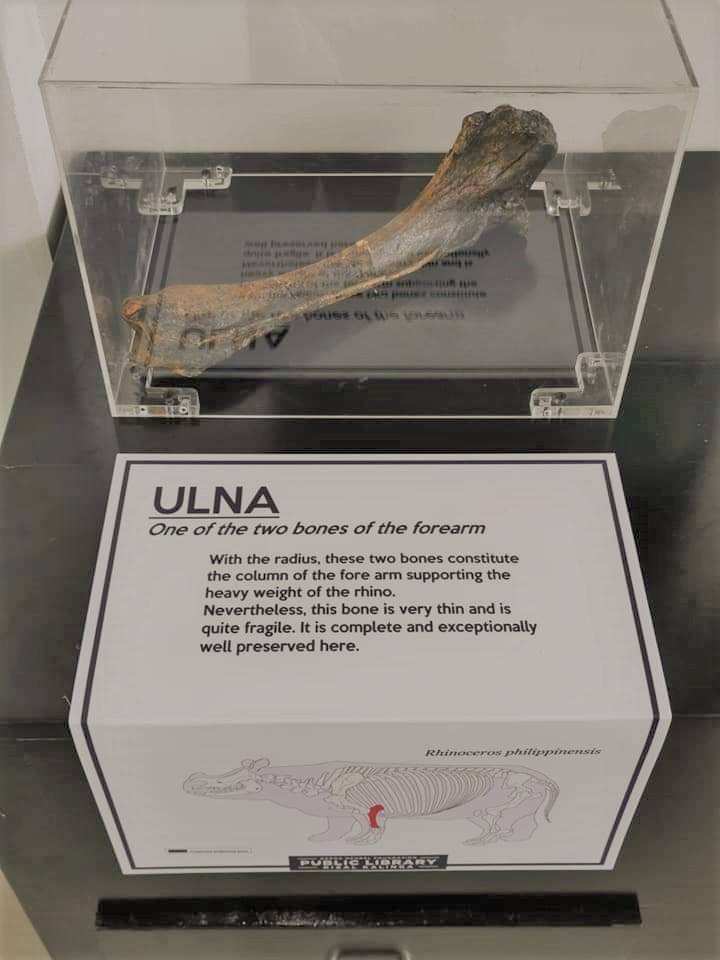
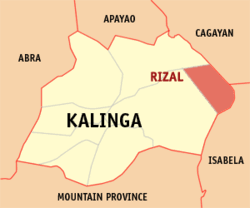
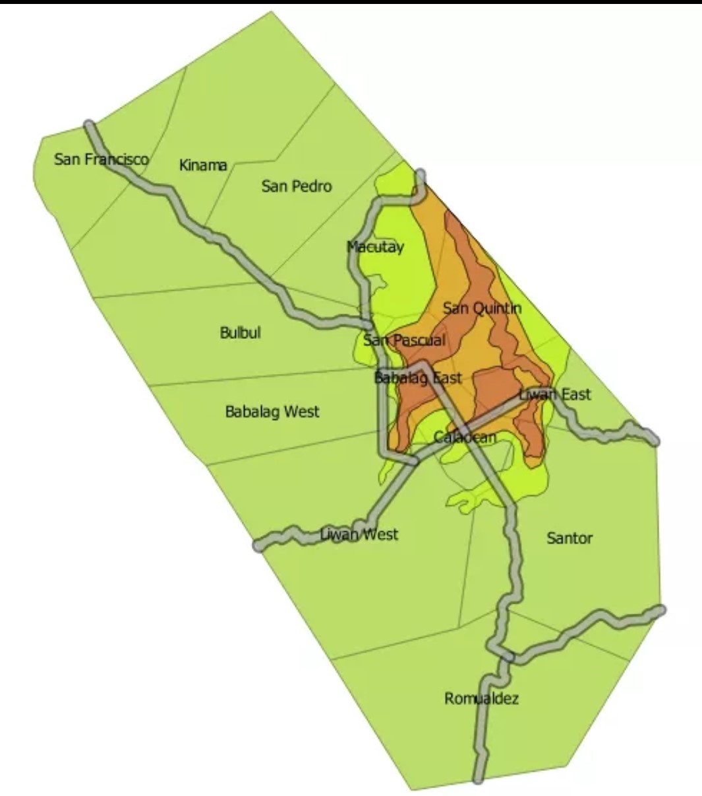

FUN FACTS:
Home of the "Biggest Gong" - found in the Public Library and declared as the biggest gong in Cordillera Administrative Region (CAR). It symbolizes how Rizal embrace and treasure the Cordillerans way of life.
Discovery of Kalinga's "Archaeological Treasure" - In 2014, a 75%-rhino fossil (Rhinoceros Philippinensis), that lived more than 700,000 years ago, was excavated in a grassland Sitio Greenhills, San Pedro. The site has been a subject of archaeological research and studies since 1935. This was featured by PIA.
HISTORY


GEOGRAPHY


Rizal is strategically situated between Kalinga and Cagayan provinces.
It consists of 14 Barangays:
The public trasportations are tricycle and jeepney.